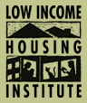

Sand Point CTC (LIHI)

Website:
http://www.lihi.org/ Location:
Seattle, WA
The Low Income Housing Institute develops, owns and operates housing for the benefit of low-income, homeless and formerly homeless people in Washington State; advocates for just housing policies at the local and national levels; and administers a range of supportive service programs to assist those we serve in maintaining stable housing and increasing their self-sufficiency.
Founded in 1991, LIHI has grown to be one of the most productive affordable housing developers in the Northwest. LIHI owns and/or manages over 1,700 housing units at 50 sites in six counties throughout the Puget Sound region. Eighty percent of LIHI housing is reserved for households earning less than 30 percent of the area median household income.
LIHI provides a variety of supportive services to help residents maintain their housing and develop self-sufficiency. Our efforts include providing residents with case management, life skills training, technology access and training, financial literacy training and savings programs, and activities for some of the more than 500 children in LIHI housing.
LIHI also owns and operates the Urban Rest Stop, a much-needed hygiene facility for homeless individuals and families located in downtown Seattle, serves approximately 5,000 unduplicated individuals each year. The URS is designed to serve a wide range of people including homeless adults, families with children, youth and the elderly. Urban Rest Stop patrons include disabled persons, veterans, non-English-speaking individuals and people of color.
LIHI believes that affordable housing does not mean poor quality housing. We believe that innovative partnerships, creative project development and sustainable design features in affordable housing makes for a healthy, strong, and committed community.
Supported Projects
CTC Support
Catherine Sullivan
9/2004 — 9/2005
VISTA Member Catherine Sullivan is currently working with the Low Income Housing Institute Sandpoint CTC. The CTC is open to anyone in the community needing access to technology and offers trainings to seniors on an ongoing basis along with a Tuesday night tutor group. In the future the CTC plans to offer additional computer classes to the community.
• Built a good rapport with CTC users. Cat has developed a good relationship with many of the CTC users. The users are not afraid to ask her for assistance and she has many community members coming to her on a regular basis.
• Contacted representatives from each county in WA for information to put on new LIHI website. Cat sent an e-mail to people from each county seeking community information to add to a community resource/predatory lending website. She also compiled information for many of the counties through her own research.
• Coordinated the scheduling of Volunteer Monitors. Cat has been working with our volunteer monitors to ensure proper coverage to maintain the hours the lab is available for the community.
• Prepared CTC for Senior Training Seniors Classes. Cat has ensured that computers are running and that the lab is set up for the seniors training seniors’ classes. This had not been being done satisfactorily in the past, Cat has done an excellent job of ensuring that it now is and has received many compliments from the volunteer teachers.
• Posted rules and calendar of lab hours. Cat has developed a calendar to post for lab hours. She has also met with the volunteer monitors to establish rules for the lab. She is currently working with the monitors to ensure the rules are being followed.
Related Content
None created yet!